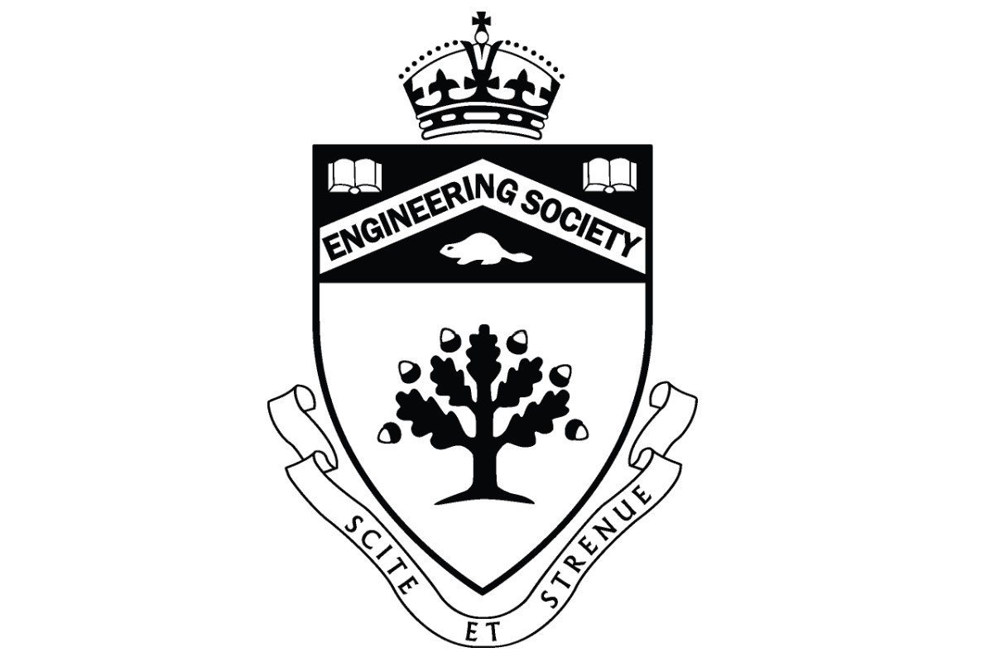
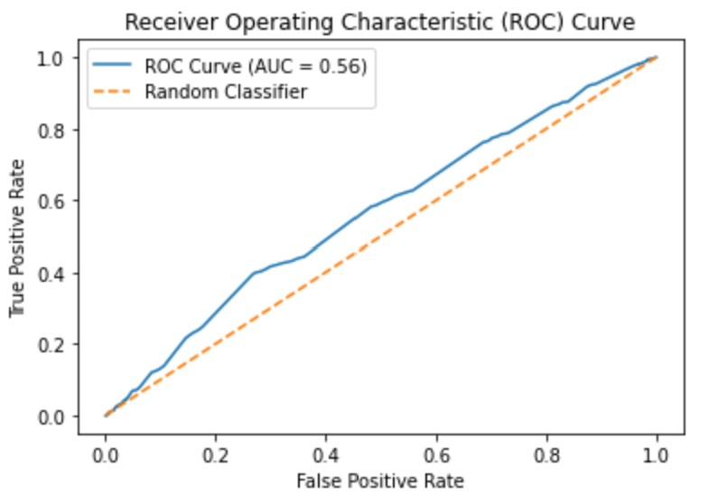

July 2024 – Aug 2024
Personal Project
FaceChat
Developed an interactive chat interface with emotion-driven TTS and real-time facial animation, enhancing learning through diverse stimuli beyond text and voice.
Jan 2023 – Apr 2023
UofT ECE297

GIS Safety Map: SafeCity
Developed a GIS-based map in C++ with ezgl, integrating past crime data and real-time traffic API to highlight high-risk areas, improving safety awareness and navigation efficiency.
Mar 2023 – Apr 2023
UofT ECE243
FPGA Karaoke Program: My Heart Will Go On
Developed a karaoke program that plays My Heart Goes On by Celine Dion in C on FPGA with VGA display
May 2023 - Current
UofT Engineering Society Finance Committee
Finance Secretary
Managing the financial operations of Engineering Society, ensuring efficient budgeting, financial planning, and accurate reporting.
Dec 2023
UofT ECE241 - Digital Systems
Dance of Beavertail
Developed a hardware-programmed video game using FPGA and VGA display.
Jan 2023
Personal Project

Portfolio Website Development
Interactive HTML website portfolio for showcasing my engineering skills and project experience to the world.
Feb 23 - 24, 2023
Google, UofT, Vector, etc
Toronto Health Datathon
A hackathon implementing ML models to solve real-world medical problems facing the Canadian healthcare system.
🥈2nd Place
Jan - Apr 2023
UofT APS112 - Engineering Strategies & Practice II

Optimization of the Flow of Ambulatory Patients
Developing an efficient system to reduce patient wait times and optimize supply management in the Emergency Department of Sunnybrook Hospital.
Jan - Apr 2023
UofT Engineers Without Borders

EWB Community Partnerships Project
Collaborating with local communities and the Toronto government council to create sustainable solutions for environmental challenges.